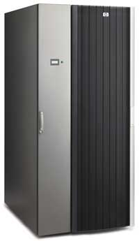
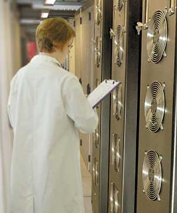
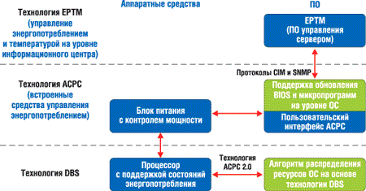

С проблемами энергообеспечения и охлаждения систем в корпоративных информационных центрах сталкиваются сегодня не только технические специалисты и администрация, но и обычные корпоративные пользователи, представители малого бизнеса и промышленности. Причина этих проблем - несоответствие между повсеместным бурным ростом числа серверов и систем хранения данных и их все возрастающей производительностью, с одной стороны, и ограниченными возможностями внедрения экономически эффективных решений в большинстве информационных центров - с другой.
Эксперты предупреждают, что если соотношение производительности и потребляемой мощности современных компьютеров не улучшится, расходы на электроэнергию для их эксплуатации начнут существенно превышать первоначальные затраты на оборудование. Потеря контроля над потребляемой компьютерами энергией может иметь серьезные последствия для доступности вычислений, не говоря уже о состоянии окружающей среды.
Сегодня производители постоянно работают над новыми методами проектирования и производства систем, направленными на повышение энергетической эффективности транзисторов и уменьшение потребляемой энергии системных плат.
Уровень микросхем
Впервые проблема потребляемой энергии и тепловыделения стала предметом широких дискуссий в 1999 г., когда на сцену вышла компания Transmeta (http://www.transmeta.com). Корпорация Intel и другие производители процессоров сразу же взялись за дело, но предложить эффективное решение при одновременном повышении производительности оказалось нелегко. Хотя темпы увеличения потребляемой энергии несколько снизились, общий уровень необходимой для вычислений мощности все равно продолжает расти. Результатом стал "мини-бум" среди компаний, специализирующихся на радиаторах и других компонентах систем охлаждения.
Потребляемая процессорами мощность стала предметом многолетней конкуренции между Intel (http://www.intel.com) и AMD (http://www.amd.com). Так, серверный процессор AMD Opteron потребляет не более 95 Вт, а Intel Xeon - от 110 до 165 Вт. Другие компоненты тоже расходуют энергию, но специалисты отмечают, что в маломощных серверах на долю процессора обычно приходится 50-60% всей потребляемой мощности. Переход Intel в 2003 г. к 90-нм технологии вынудил корпорацию задуматься о том, как обуздать безудержный рост энергии, расходуемой ее процессорами. Дело в том, что Pentium 4 Prescott, выпущенный в начале 2004 г., при максимальной производительности потреблял свыше 100 Вт, и эта величина должна была вырасти еще больше. Однако индустрия ПК воспротивилась требованиям к охлаждению, которые пришлось бы соблюдать, чтобы процессоры, рассеивающие 200 Вт, просто не расплавились. А 90-нм технология оказалась более склонной к утечкам по сравнению с предшествующими производственными процессами, что делает кристаллы, выполненные с учетом этих проектных норм, более горячими, даже когда они работают не на полную мощность. В результате Intel пришлось отказаться от курса на выпуск все более быстрых микросхем и вместо этого заняться малопотребляющими конструкциями и энергетически эффективными методами производства.
Так, в этом году корпорация планирует перейти на принципиально новую архитектуру изготовления кристаллов, которая минимизирует потребляемую мощность. В частности, Intel экспериментирует с отдельным напряжением питания для процессоров. Согласно этому плану, у процессора будет свое напряжение питания, а у кэш-памяти - свое. Таким образом конструкторы систем смогут обойтись без интегральных микросхем, регулирующих в современных системах подачу напряжения для этих компонентов, и высвободить пространство на системной плате, исключив лишнюю нагрузку на источник питания.
Другой путь заключается в том, чтобы уменьшить энергию, потребляемую набором микросхем и другими компонентами, расположенными на системной плате, путем введения стабилизаторов напряжения непосредственно в микросхемы вместо использования аналоговых компонентов от других поставщиков. Цифровые стабилизаторы смогут быстрее, чем аналоговые, реагировать на изменение требований к напряжению.
В своем двухъядерном процессоре Xeon Tulsa, который будет выпущен во втором полугодии, Intel делает упор на производительность. Этот кристалл будет работать с тактовой частотой 3,4 ГГц, быстрее процессора Xeon 3 ГГц (прежнее кодовое название Paxville), присутствующего на рынке сегодня. К тому же Tulsa оснащен 16-Мбайт объединенной кэш-памятью - каждое ядро может обращаться к данным из общего кэша. Напомним, что сейчас сдвоенные кристаллы Intel и AMD используют отдельную кэш-память; IBM выпускает двухъядерные кристаллы с объединенной кэш-памятью. Подобное нововведение повышает производительность при работе с одним и тем же приложением на величину до 10%. К тому же это будет первый процессор Intel с технологией виртуализации Pellston, которая позволит запускать на этом процессоре сразу несколько операционных систем.
В Tulsa будет применяться и технология экономии энергии. Кэш-память можно вводить в состояние "сна" и "глубокого сна", экономя таким образом до 6 Вт потребляемой мощности (подчеркнем, что в современных процессорах кэш-память большую часть времени включена и неизбежно дает утечку тока). Тем не менее конструктивная тепловая мощность (TDP, или тепловой потолок) Tulsa составляет 150 Вт - меньше, чем у Paxville со значением TDP 165 Вт. Обычно процессоры во время работы не достигают своего теплового потолка, но производителям серверов в своих конструкциях приходится ориентироваться именно на него. Чем выше тепловой потолок, тем выше может быть и средняя потребляемая мощность. Между тем процессор AMD Pacifica, как утверждает компания, имеет тепловой потолок 95 Вт и тоже будет оснащен технологией виртуализации. Каждое ядро Pacifica снабжено собственной кэш-памятью емкостью 512 Кбайт. Как следует из плана разработок, AMD освоит объединенную кэш-память не ранее будущего года.
Определенные усилия в направлении разработки энергосберегающих процессоров предпринимает и Sun Microsystems (http://www.sun.com), которая выпустила сервер Sun Fire T2000 с 72-Вт процессором UltraSPARC T1 Niagara, выполняющим больше работы на один ватт энергии по сравнению с конкурентами. Собственно, для решения проблемы потребляемой энергии практически все производители сейчас выбрали тот же подход, который Sun Microsystems применила в Niagara, - выпускать процессоры, способные одновременно исполнять множество последовательностей команд (тредов). Сегодня обычный серверный кристалл может обрабатывать один, два, иногда четыре треда, тогда как восемь ядер Niagara способны исполнять 32 треда одновременно.
По опубликованной информации, наращивание числа ядер станет доминирующим направлением развития для Intel на ближайшие два года. К концу десятилетия кристаллы будут насчитывать десятки ядер, а через десять лет теоретически возможно появление чипов с сотнями обрабатывающих ядер. Наращивание числа ядер дает очевидные преимущества. Во-первых, это снижает общую потребляемую мощность при эквивалентном уровне производительности. Например, если бы выпущенные Intel процессоры для ноутбуков Core Duo имели только одно ядро, они потребляли бы больше энергии. Кроме того, объединение обрабатывающих ядер в одном корпусе повышает производительность за счет укорачивания путей передачи данных. Обмен информацией между ядрами занимает наносекунды, поэтому при объединении ядер автоматически повышается доступная полоса пропускания.
Процессор Intel Clovertown с четырьмя ядрами будет поставляться производителям серверов в конце этого года и появится в системах в начале следующего. Он предназначен для двухпроцессорных серверов, которые, по существу, превратятся в восьмипроцессорные. Примерно тогда же компания выпустит анонсированную ранее версию Tigerton для серверов с четырьмя или более процессорами. AMD тоже выпустит четырехъядерные процессоры в 2007 г.
Уровень систем
Настольные компьютеры - не единственное оборудование, где сегодня необходимы высокоэффективные системы охлаждения. Серверные стойки требуют гораздо большего внимания в части охлаждения из-за высокой плотности размещения компонентов в них. За последнее десятилетие резко возросли потребности информационных центров в количестве серверов, их производительности, потребляемой мощности, а также требования к уровню производительности настольных систем. Но возможности информационных центров по обеспечению энергоснабжения и охлаждения не успевали за темпами роста потребностей. Охлаждение мощных систем становится сейчас главной проблемой, особенно в городах, где необходимость охлаждения банков серверов - обычно при помощи вентиляторов - приводит к выходу за пределы допустимой потребляемой мощности. Эксперты утверждают, что к каждому киловатту энергии, потребляемой системой, приходится добавлять три четверти этой величины для ее охлаждения.
Начиная с середины 90-х гг. число установленных во всем мире серверов возросло в 150 раз, а их производительность - более чем в 10 раз. Однако помещения, где устанавливаются серверы, часто не соответствуют необходимым требованиям к энергообеспечению и охлаждению. Например, типичные информационные центры в состоянии сегодня обеспечить мощность не более 450-800 Вт на квадратный метр, что составляет менее четверти того, что необходимо современным компаниям. Задача увеличения мощности питания и охлаждения серверов, а также расширения площадей, занимаемых вычислительным оборудованием, для многих компаний сегодня трудноразрешима. Большая часть бюджета ИТ-структур расходуется на оплату труда персонала и повседневные процессы. Автоматизация и снижение совокупной стоимости владения позволяют перенаправить часть средств на улучшение функциональных возможностей информационных центров. Однако до настоящего времени для таких центров не создано интегрированных решений для управления питанием и охлаждением.
Типовые решения
Типичная для информационного центра конструкция - это стойка (или шкаф), куда устанавливается различное активное оборудование, зачастую со значительным тепловыделением при высокой плотности размещения. Проблема отвода избыточного тепла решается при помощи протяжной вентиляции, выводящей нагретый воздух в окружающее пространство. Широко распространенная вертикальная вентиляция с подачей воздуха через цоколь с двойным днищем не всегда обеспечивает необходимую эффективность. Поэтому в тех случаях, когда существуют специальные требования, охлаждающий воздух подается в горизонтальном направлении в зазор между охлаждаемым оборудованием. В шкафах серверного типа горизонтальное охлаждение чаще всего реализуется за счет перфорации передней и задней дверей.
При создании вычислительного центра проектировщики часто применяют установку шкафов в ряд задними дверями друг к другу (ширина прохода между рядами должна составлять от 1,5 до 2 м). В таких структурах образуются области с повышенными и пониженными температурами, благодаря чему можно спроектировать эффективную систему кондиционирования. Вентилятор системы охлаждения сервера засасывает холодный воздух, который система кондиционирования здания подает к передней стороне шкафа (холодный сектор), и использует его для отвода избыточного тепла, выделяющегося при функционировании центрального процессора. Нагретый воздух выбрасывается с задней стороны (теплый сектор) и забирается в кондиционер для охлаждения. В данном случае хорошо действует следующее эмпирическое правило: для эффективного охлаждения одного стандартного 19-дюйм шкафа он должен располагаться на свободной площади не менее 3 кв. м.
Иногда система общего воздушного охлаждения оказывается недостаточно эффективной, чтобы обеспечить нормальные условия функционирования процессора сервера. Для охлаждения высокопроизводительных комплексов применяются дополнительные холодильники: речь идет о комбинированных системах воздушно-водяного охлаждения. Сейчас несколько компаний уже выпускают их серийно, и поэтому их стоимость не слишком высока. Производительности подобных систем достаточно для отвода 20 кВт выделяемой мощности, они могут использоваться в вычислительных центрах научно-исследовательских институтов в комплексах для распределенных вычислений.
Принцип отвода тепла в подобных установках основан не на подаче холодного воздуха, отбираемого от системы общего кондиционирования, а на прокачке воды, поступающей от системы водоснабжения здания и охлажденной до температуры 6-12?С. Охлаждающий воздух циркулирует внутри шкафа по замкнутой схеме. Для повышения эффективности он принудительно подается на серверы, отбирается на выходе системой охлаждения, по воздуховоду поступает в теплообменник и после охлаждения используется снова. При отводе выделяемой мощности до 1 МВт в системе охлаждения необходимо применять трубу внутренним диаметром 125 мм.
Преимущество подобного решения по сравнению с системой воздушного охлаждения - малые габариты его аппаратной части. Еще один положительный момент состоит в том, что система водяного охлаждения нередко включается в состав оборудования современных вычислительных центров еще на стадии архитектурного проекта, а здание старой постройки можно дополнительно оснастить ею без всяких проблем. Система централизованного охлаждения, оборудование которой чаще всего монтируется на крыше здания, обеспечивает постоянную подачу охлажденной воды.
Отдельного упоминания заслуживает факт разработки еще более эффективных (но и более дорогих) систем охлаждения, принцип работы которых основан на непосредственной подаче охлаждающей жидкости на центральный процессор. Компании и научно-исследовательские институты, в чьих вычислительных центрах установлены компьютеры с высоким энергопотреблением, в настоящее время могут работать по схеме воздушно-водяного охлаждения. В перспективе они получат возможность без проблем перевести систему на принцип прямого жидкостного охлаждения.
Современные системы водяного охлаждения
Жидкостное охлаждение, применявшееся в компьютерах таких компаний, как Control Data Corp. (CDC) и Cray, переживает сейчас второе рождение. Напомним, что в модели ETA-10 была применена система охлаждения процессоров жидким азотом, что позволило вдвое повысить производительность. С эффективностью такой системы не поспоришь, однако ее цена заставляет задуматься даже военные ведомства. Так что применение этой технологии пока остается уделом сверхплотных и сверхпроизводительных систем стоимостью несколько сотен тысяч и даже миллионов долларов.
Для того чтобы решить проблемы с охлаждением в центрах обработки данных, компания Fujitsu Siemens Computers (http://www.fujitsu-siemens.com) разработала стойку PrimeCenter LC с водяным охлаждением (LC означает жидкостное охлаждение). В двух ее новых 19-дюйм серверных стойках (высотой 38 и 46U) использована технология охлаждения Cool-safe.
Подобное решение справляется с постоянно растущим тепловыделением серверов, их подсистем и компонентов (таких, как процессоры и память) более эффективно, чем традиционные системы вентиляторов и кондиционирования воздуха. Вместо того чтобы охлаждать постоянно нагревающееся помещение, по технологии Cool-safe выделяемое системой тепло поглощается специальными теплообменниками с водяным охлаждением.
Этот метод имеет многочисленные преимущества. Помимо того, что охлаждающие свойства воды намного лучше, чем у воздуха, для этого метода требуется гораздо более простая инфраструктура, поскольку стойки PrimeCenter LC не дают дополнительной нагрузки на системы кондиционирования воздуха компьютерной комнаты. Это значительно снижает структурные и пространственные требования и энергопотребление, сокращая общие расходы на эксплуатацию.
Холодные стойки PrimeCenter LC можно безопасно размещать намного ближе друг к другу, чем стандартные стойки с воздушным охлаждением, благодаря чему в одной и той же комнате помещается в три раза больше серверов, чем раньше. Рейтинг безопасности IP52, определяющий степень защищенности от пыли и влаги, позволяет применять такие стойки даже в сборочных цехах и других местах за пределами серверной комнаты. Отметим, что рейтинг внешней защиты, система классификации эффективности корпусов в плане защиты от попадания твердых и жидких веществ, основаны на признанном стандарте IEC 60529, опубликованном Международной комиссией по электротехнике (http://www.iecq-cecc.org).
Дополнительное преимущество метода заключается в полной герметичности системы - это означает, что стойку PrimeCenter LC требуется заполнять водой только один раз. Кроме того, новая система имеет пониженный вдвое (на 10 дБА) уровень шума.
Как отмечают разработчики, в новых стойках PrimeCenter LC используется весь обширный опыт Fujitsu Siemens Computers в производстве продукции для центров обработки данных. Модульная конструкция стоек обеспечивает полную интеграцию гетерогенных систем, в том числе серверов Primergy и PrimePower, систем хранения SAN и NAS, концентраторов, консольных коммутаторов и других устройств, подключаемых к стандартной электросети. Новая серверная технология более надежна и долговечна, а также обеспечивает более высокий уровень готовности, сокращая потребности в администрировании и техническом обслуживании и уменьшая совокупную стоимость владения.
Компания НР (http://www.hp.ru) в начале этого года также выпустила систему водяного охлаждения, помогающую решать проблемы избыточного тепла, которые новые технологии взвалили на плечи системных администраторов. Модульная система охлаждения Modular Cooling System (рис. 1) крепится на стойку НР сбоку, образуя закрытую камеру с охлажденным воздухом, отделенную от остального помещения вычислительного центра. Система увеличивает допустимую потребляемую мощность стойки до 30 кВт (это примерно втрое больше, чем без нее), не добавляя проблем системе охлаждения вычислительного центра. Однако для охлаждения воды ее нужно подключать к внешней системе водоснабжения.
|  | Рис. 1. Система охлаждения Modular Cooling System.
|
Система охлаждения предназначена для стойки HP 10000 G2 Universal Rack, новой модели стоимостью 1200 долл., заменяющей семь моделей нестандартных стоек, которые компания применяла для своих продуктов ранее. Например, заказчикам серверов ProLiant x86 и Integrity Itanium приходилось покупать отдельные стойки для каждого вида оборудования. В этом году НР планирует выпустить комплект для модернизации системы охлаждения, позволяющий применять ее со старыми стойками 10000 G1, в которых размещаются серверы ProLiant. Для мониторинга охлаждения применяется HP Power Distribution Unit Management Module. Для управления системой охлаждения и ввода предупредительных сигналов о таких событиях, как перегрев, можно использовать ПО дистанционного управления НР.
В перспективе компания также рассчитывает выпустить жидкостную систему, способную охлаждать сразу несколько стоек с оборудованием. Такой комплекс появится на рынке не ранее 2007 г. Жидкостное охлаждение означает, что администраторам потребуется новый опыт, и такая система охлаждения подойдет не всем. Но в НР верят в ее перспективность и полагают, что в обозримом будущем увидят десятки тысяч таких систем.
Микроканальные радиаторыОхлаждение компонентов ПК превратилось в серьезную проблему для производителей микросхем и компьютеров. Так, последние настольные модели Apple G5 снабжены жидкостной системой охлаждения, однако эта система добавляет к стоимости компьютера около 50 долл. Ученые с кафедры механики университета Purdue испытывают "микроканальные радиаторы", содержащие микроскопические каналы, в которых циркулирует охлаждающая жидкость. Такие радиаторы смогут охлаждать, в частности, греющиеся компоненты компьютеров. Они занимают площадь всего около 1 кв. дюйма, а диаметр каналов, заполненных жидкостью, составляет примерно 300 мкм. Микрофлюидика - технология изготовления кристаллов, снабженных миниатюрными каналами для циркуляции жидкости, - постепенно переходит из стадии экспериментов в стадию формирования рынка. Уже сегодня корпорации ST Microelectronics, Intel и Pria Diagnostics предлагают микрофлюидные кристаллы для подготовки медицинских проб, которые могут заменить современные дорогостоящие процедуры и оборудование для лабораторных анализов. Некоторые из микрофлюидных устройств - это целые химические лаборатории в миниатюре. Радиаторы Purdue работают, как змеевик холодильника. Компрессор гонит мимо горячей точки охлаждающую жидкость, которая отводит тепло. Кстати, используя похожую технологию - но совсем другим способом, - компания Boston Microsystems создала кристалл с микроканалами, который может нагреваться до 1100°C за 0,001 с. Одна из трудностей проекта Purdue состояла в том, что в микроскопическом устройстве материалы ведут себя необычно. В микроканалах жидкость течет не так, как в водопроводных трубах, и пузырьки образуются иначе, что меняет характер процессов теплоотдачи. Ученые отмечают, что им приходится конструировать новые системы для прокачки охлаждающей жидкости сквозь эти микроканалы и разрабатывать новый математический инструмент, чтобы оценивать качество работы таких конструкций.
|
Охлаждение углекислым газом
С появлением блейд-серверов проблема тепла и теплоотдачи приобрела особую остроту. Впрочем, одна британская компания утверждает, что она совершила прорыв в этой сфере, использовав в качестве охлаждающего агента углекислый газ, что способно решить проблему. Система с охлаждением углекислым газом (рис. 2) разработана компанией Trox Advanced IT Cooling Systems (http://www.troxaitcs.com, AIT) совместно со специализирующейся на холодильниках Star Refrigeration. Первые такие устройства охлаждения установлены в Imperial College в Лондоне. Пока компании не слишком много сообщают о том, как работает их система CO2 Mission Critical Cooling, однако, как говорится в распространенном ими заявлении, идея состоит в том, чтобы вместо обычного охлаждения использовать поглощение тепла - при этом получается более гибкое и энергетически эффективное решение. Система охлаждения предназначена главным образом для высококомпактного охлаждения, особенно блейд-серверов, которые могут создавать плотность нагрузки свыше 20 кВт на шкаф. Устройство крепится к шкафу с серверами сзади и поглощает тепло, нагнетаемое вентиляторами. Trox AIT утверждает, что принцип поглощения тепла обеспечивает "внутреннюю гибкость". По мнению разработчиков, система отличается высокой емкостью, малым потреблением энергии и преимуществами, которые дает использование такого электрически нейтрального вещества, как углекислый газ.
|  | Рис. 2. Система охлаждения компании Trox Advanced IT Cooling Systems.
|
Стоит, однако, отметить, что углекислый газ опасен в случае его утечки и скопления. Затем может возникнуть проблема расходов. Все средства обеспечения безопасности нужно контролировать на пожаробезопасность и теплостойкость.
Триумвират технологий от Intel
Проблемы, связанные с энергопотреблением и охлаждением, усугубляются повсеместным неэффективным использованием систем энергообеспечения и охлаждения в информационных центрах. Отсутствие научно обоснованного подхода к данным проблемам становится причиной того, что многие администраторы резервируют слишком большие мощности для устанавливаемого оборудования. Например, для системы, которая реально потребляет не более 200 Вт, иногда выделяется до 500 Вт электрической и охлаждающей мощности. Во многих случаях это означает, что системы эффективно используют менее 50% электрических и охлаждающих мощностей. Поскольку системы энергообеспечения и охлаждения функционируют при половинной нагрузке, их работа становится менее эффективной, что негативно отражается на стоимости эксплуатации.
Вряд ли полное решение будет найдено в ближайшем будущем, но пока можно сделать какие-то шаги в нужном направлении. Один из них - повышение эффективности потребления энергии компонентами и системами. Другой шаг - создание технологий управления питанием, поддерживающих более интеллектуальные и простые механизмы выделения энергетических ресурсов в корпоративных центрах данных. Ожидается, что автоматизация управления энергопотреблением обеспечит два преимущества: во-первых, она поможет сократить совокупную стоимость владения и перенаправить часть финансовых ресурсов на улучшение функциональных возможностей энергообеспечения и охлаждения. Во-вторых, корректировка мощности систем энергоснабжения и охлаждения в зависимости от произвольно меняющейся нагрузки и доступности отдельных ресурсов повысит эффективность использования пространства, на котором размещаются информационные центры, и систем охлаждения.
Intel возглавляет разработку решений для будущих серверных платформ и компонентов, призванных решить поставленные задачи. В числе этих решений - технологии Demand-Based Switching (DBS), Automatic Control of Power Consumption (ACPC) и Enterprise Power & Thermal Manager (EPTM). Intel также настоятельно рекомендует производителям программного и аппаратного обеспечения включить поддержку этих технологий в свою продукцию.
Технология Demand-Based Switching минимизирует непроизводительный расход энергии, динамически изменяя уровень производительности и состояние энергопотребления процессора в зависимости от нагрузки. Состояния энергопотребления определяются тактовой частотой и напряжением питания. Похожие возможности обеспечивает технология Intel SpeedStep, применяемая в платформе Intel Centrino для мобильных ПК. Исследования показали, что энергопотребление сервера, не поддерживающего технологию DBS, практически не изменяется в зависимости от загрузки процессора. Однако на сервере с поддержкой данной технологии прослеживается явная зависимость между этими показателями. Применение технологии DBS дает в среднем 30%-ную экономию потребляемой энергии - в зависимости от состояний процессора, алгоритмов распределения ресурсов и нагрузки. Если удастся повысить эффективность источников питания, экономия энергии может быть и более значительной. По этой причине Intel активно проводит политику внедрения технологии DBS в серверные решения.
Еще одна технология управления энергопотреблением, предлагаемая корпорацией для системных решений, - Automatic Control of Power Consumption (ACPC). Эта технология упрощает управление энергетическими ресурсами за счет механизма управления, основанного на обратной связи, который контролирует потребляемую сервером мощность и удерживает ее ниже заданного пользователем уровня. Технология ACPC позволяет предотвратить срабатывание автоматов защиты электросети. Во время электрических и тепловых перегрузок обслуживающему персоналу не придется отключать серверные системы - потребуется всего лишь уменьшить уровень энергопотребления. В обоих случаях за счет технологии ACPC удается избежать отключения нужных сервисов и повысить степень готовности.
Третья технология управления энергопотреблением, разработанная Intel, носит название Enterprise Power and Thermal Manager (EPTM). Решения на базе этой технологии представляют собой готовые инструментальные средства, сочетающие преимущества технологий DBS и ACPC и позволяющие динамически резервировать мощность, максимально увеличивая производительность систем. Это делает технологию EPTM хорошим решением для управления энергопотреблением на любом уровне: начиная от отдельной стойки и заканчивая всем информационным центром. Технология EPTM лучше всего раскрывает преимущества технологии ACPC, создавая инфраструктуру для ее автоматизации, исключающую вмешательство оператора. В этом качестве технология EPTM позволяет не только решать задачи, связанные с управлением энергопотреблением, но и сократить расходы на оплату труда и техническое обслуживание, составляющие значительную долю затрат в информационных центрах.
Эксперты Intel полагают, что внедрение всех трех технологий - Demand-Based Switching, Automatic Control of Power Consumption и Enterprise Power and Thermal Manager - в информационных центрах обеспечит еще большую эффективность, поскольку при этом преимущества отдельных технологий дополняют друг друга (рис. 3). Новые серверные платформы, процессоры и другие компоненты Intel уже поддерживают эти технологии. Кроме того, корпорация сотрудничает с производителями, оказывая им поддержку в области комплексного внедрения предлагаемых технологий, что не только расширяет сферу их распространения, но и способствует укреплению позиций производителей.
|  | Рис. 3. Комбинация решений на базе трех технологий Intel.
|
Ноу-хау отечественных производителей
Одной из инновационных разработок Центра исследований и экспертизы Kraftway (http://www.kraftway.ru) стала система охлаждения кластеров, построенных из тонких серверов. Созданная установка позволяет размещать в тонких серверных корпусах высотой 1U и 2U процессоры с тепловым пакетом 130-200 Вт. При этом для обдува внутри корпуса используются один или максимум два вентилятора низкой производительности, что снижает вибрации, приводящие к уменьшению производительности из-за частой перекалибровки жестких дисков, а также собственно шум от кластерной стойки. Кроме того, температура электронных компонентов сервера снижается на 10-15?C по сравнению с тем, что дает традиционное воздушное охлаждение процессоров сервера, значительно повышая отказоустойчивость последнего. Более эффективный тепловой цикл установки позволяет сократить затраты электроэнергии при эксплуатации кластера по сравнению с традиционной системой кондиционирования и воздухообмена.
Система предусматривает отвод тепла от горячих процессоров тепловыми трубками. При этом один конец трубки располагается на самом процессоре, отбирая тепло, а другой выводится на заднюю стенку сервера. Тем самым упрощается не только конструкция охладителя, но и процесс замены серверов: достаточно отвинтить тепловую трубку и вынуть корпус из стойки, не останавливая и не разбирая всю систему охлаждения. В качестве теплоносителя в тепловых трубках используется фреон, что позволяет добиться необходимой производительности и безопасности. В случае утечки фреон тут же улетучивается, а теплоемкость его испарения сравнима с водой. Другой основный компонент системы - постоянно охлаждаемая тепловая колонна. Внутри нее расположена медная трубка с массой мельчайших отверстий (диаметр их не превышает нескольких десятков микрон), в которую специальная помпа подает хладоагент - фреон (HFC R142b). Протекая по трубке, фреон через отверстия разбрызгивается на внутреннюю поверхность колонны. Испаряясь на ней, он отбирает тепло и уходит по трубке к основному компрессору. Дополнительная помпа необходима для того, чтобы регулировать нагрузку. Дело в том, что стойка с серверами может быть заполнена только частично, и охлаждать колонну целиком не имеет смысла. С другой стороны, основной компрессор кондиционера работает на постоянных оборотах, и снижать их недопустимо, так как он может просто-напросто выйти из строя. Поэтому оказалось рациональнее поставить дополнительную помпу непосредственно в стойке и управлять уже ее оборотами.
Тепловые трубыТепловая труба - это герметическое теплопередающее устройство, которое работает по замкнутому испарительно-конденсационному циклу в тепловом контакте с внешними источником и стоком тепла (рис. 4). Тепловая энергия воспринимается от источника и затрачивается на испарение теплоносителя, заключенного внутри корпуса тепловой трубы. Затем она переносится паром в виде скрытой теплоты испарения и далее, на определенном расстоянии от места испарения (в зависимости от тех или иных способов теплосъема), при конденсации пара выделяется в сток. Образовавшийся конденсат возвращается в зону испарения либо под действием капиллярных сил, которые обеспечиваются наличием специализированной капиллярной структуры внутри тепловой трубы, либо за счет действия массовых сил (последняя конструкция обычно именуется термосифоном). Таким образом, вместо электронного механизма переноса тепла путем теплопроводности, что имеет место в сплошном металлическом теплопроводе, в тепловой трубе используется молекулярный механизм переноса (более точно - процесс переноса кинетической и колебательной энергии хаотического движения частиц пара).
Что же привлекает конструкторов в тепловых трубах? В первую очередь это возможность передачи сотен ватт и даже киловатт - скрытая теплота испарения характеризуется очень солидными значениями (тысячи джоулей на грамм вещества). Если испарять массу жидкости порядка нескольких граммов в секунду, то с паром будет переноситься тепловой поток, оцениваемый в несколько киловатт (до десятка). Другая интересная особенность - это возможность концентрации тепловой энергии: системы тепловых труб могут работать в комплексе с большим количеством тепловых источников и гибко конфигурироваться под различные задачи. А в компьютерной области применение тепловых труб становится актуальным благодаря возможности развить большую площадь теплоотдающей поверхности далеко за пределами теплонагруженной области. К слову, тепловые трубы, при всей своей новизне для компьютерного сектора, в других областях зарекомендовали себя уже давно и очень хорошо. Так, современные космические аппараты связи проектируются на основе специальных несущих панельных конструкций, в которых буквально каждый сантиметр пронизан тепловыми трубами. Самое широкое применение тепловые трубы получили и в различных приборах и системах электронной и медицинской техники, в энергетике и химической отрасли. В зависимости от поставленной задачи, тепловые трубы могут иметь различные конфигурации и внешние оребрения. Пользователям ПК наиболее знакомы тепловые микротрубы, которые широко используются в известных "кулерах" китайских производителей. Такие устройства пусть и обладают весьма слабыми тепловыми характеристиками, работая при мощностях порядка 100 Вт практически на пределе, однако по габаритам полностью отвечают требованиям современной компьютерной техники. Эти микротрубы - классический вариант конструкций тепловых труб. Контурные тепловые трубы (КТТ) - это герметичные теплопередающие устройства, обладающие сверхнизким термическим сопротивлением и работающие по замкнутому испарительно-конденсационному циклу с использованием "капиллярного механизма" для прокачки теплоносителя. КТТ способны передавать тепловые потоки от нескольких ватт до нескольких киловатт при различной ориентации в гравитационном поле и в невесомости без дополнительных источников энергии. К преимуществам КТТ следует отнести следующие их качества:
|
Специалисты компании DEPO Computers (http://www.depo.ru) также разработали технологии, которые продлевают срок службы, повышают надежность и уровень безопасности компьютерных систем. Так, благодаря технологии DEPO Isogravity Cooling Technology оригинальная конструкция увеличивает ресурс и обеспечивает повышенную надежность при эксплуатации высокооборотной турбины, охлаждающей сервер. Кроме того, как утверждают разработчики, при прочих равных условиях (уровне шума, энергопотреблении и т. д.) данная технология обеспечивает более эффективное охлаждение, нежели другие конструкции на рынке.
Технология DEPO Hot Spare Cooling Technology делает возможной горячую замену вентиляторов охлаждения и увеличивает надежность работы системы охлаждения в целом. Это достигается путем установки в системный блок одного дополнительного вентилятора, в обычных условиях простаивающего. Но стоит остановиться одному из работающих вентиляторов или температуре в корпусе подняться до опасной отметки, дополнительный вентилятор мгновенно раскрутится и устранит проблему. Эта технология также реально увеличивает срок службы системы охлаждения сервера.
Еще одна технология, BallBearing Cooling, основана на том, что инженеры DEPO Computers, разрабатывая системы охлаждения серверов и рабочих станций, отказались от традиционно используемых подшипников скольжения в пользу подшипников качения. Это позволило снизить уровень шума в системном блоке, увеличить ресурс системы охлаждения и существенно повысить надежность ее работы.